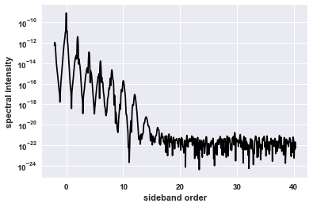

User Guide¶
Basic format of the package¶
A calculation of dynamics using TF-SeConD follows the following methodology:
- set-up the parameters of the crystal, laser and numerical grids
- create a TF_SECOND object using those parameters.
- use methods of the TF_SECOND object to calculate exciton physics, absorption, dynamics etc.
- plot the results of those calculations.
Define the problem to solve¶
Before we can solve the problem, we have to decide what the problem will be: what crystal do we want to look at, what lasers will interact with it, what form should the Coulomb interaction take etc.
The main part of TF-SeCond where the calculations of the dynamics take place, needs to receive these material and laser properties as well as the properties of the numerical grids on which the problems should be solved.
A method is provided to easily create dictionaries of such parameters in the form TF_SECOND expects to receive them:
import TF_SECOND as TFSCD
TFSCD.crystal.generate_params()
which creates three parameter dictionaries:
- XTAL_PARAMS : crystal parameters
- LASER_PARAMS : laser parameters
- GRID_PARAMS : numerical grid parameters
calculate some dynamics¶
Before we can solve dynamical problems, we need to initialise the TF_SECOND object that specifies the system we want to solve - this is where we use the parameters of the system we just defined.
we can write:
import TF_SECOND as TFSCD
XTAL_PARAMS, LASER_PARAMS, GRID_PARAMS = TFSCD.crystal.generate_params()
SBE_obj = TFSCD.crystal.solver(XTAL_PARAMS,LASER_PARAMS,GRID_PARAMS)
Upon initialization of our SBE_obj (Semiconductor Bloch Equation OBJect) we calculate the Coulomb matrix elements in the form specified in the parameters passed to it.
We are now ready to calculate further properties of our system - the nature of excitons of the crystal, and dynamics that occur when interacting with lasers.
Knowing the form of the 1s exciton, i.e its wavefunction and energetic binding is essential to get the correct dynamics. One can either find this in advance of running the dynamics - via either a variational method:
import TF_SECOND as TFSCD
XTAL_PARAMS, LASER_PARAMS, GRID_PARAMS = TFSCD.crystal.generate_params()
SBE_obj = TFSCD.crystal.solver(XTAL_PARAMS,LASER_PARAMS,GRID_PARAMS)
# find the variation groundstate - the 1s exciton
exciton_dict = SBE_obj.variational_gs()
Note that one can also calculate the 1s state via solving the eigenproblem, which
is ‘exact’ (to level of approximation of numerics). A method for doing this is available
in TF_SECOND.crystal.solver.eigen_solve(). But, it becomes computationally
expensive for large grids. However it can be useful to check for smaller grids that
there is a good match between the solutions of eigenvalue method and the variational
approach.
Following finding the 1s state, one can calculate the dynamics of the problem, If the variational ground state problem hasn’t yet been solved for the 1s state, the dynamical methods will auto-run the variational 1s solver
import TF_SECOND as TFSCD
XTAL_PARAMS, LASER_PARAMS, GRID_PARAMS = TFSCD.crystal.generate_params()
SBE_obj = TFSCD.crystal.solver(XTAL_PARAMS,LASER_PARAMS,GRID_PARAMS)
# find the variation groundstate - the 1s exciton
exciton_dict = SBE_obj.variational_gs()
# calculate the dynamics - with optical and THz lasers on
hsg_dict = SBE_obj.solve_SBE(include_coulomb=True)
# calculate the absorption of the system
absorption_dict = SBE_obj.calculate_absorption(include_coulomb=True)
The data contained in the data dictionaries is organised as follows:
TF_SECOND.crystal.solver.solve_SBE() returns a dictionary containing:
freq_dict: dictionary containing:
- Pw
- Ew
- Iw
- w_eV
- w_sideband
time_dict: dictionary containing:
- opt_field
- opt_env
- polarization
- time_grid
kt_dict: dictionary containing:
- kx
- ky
- Ax
- Ay
- P_kt_XGX
- P_kt_YGY
- Pmicro2d
- tlist2d
- Ax_list2d
- Ay_list2d
TF_SECOND.crystal.solver.calculate_absorption() returns a dictionary containing:
freq_dict: dictionary containing:
- Pw
- Ew
- w_norm
- w_sideband
- absorption_bare
- absorption
time_dict: dictionary containing:
- opt_field
- opt_env
- polarization
- time_grid
If one wants to vary a property of the laser it makes sense to only solve the exciton
wavefunction once, and re-running the dynamics for each case of the laser variation
by re-setting the laser parameters of the TF_SECOND object. For this purpose one can
use TF_SECOND.crystal.solver.reset_LASER(). An example of how one can do this
can be found in a pre-made running routine: TF_SECOND.runs.thz_loop().
plot the results¶
We have seen how we can create dictionaries of data for different dynamics simulations in 2d semiconductors. Let’s see how we can look at the data.
Clearly we can simply extract the data from the dictionaries, and use matplotlib to plot the data.
Examples¶
A simple example¶
(This example also available as a jupyter notebook - example.ipynb)
First, we will want to import the TF-SeConD package, matplotlib plotting, and numpy
import TF_SECOND as TFSCD
import matplotlib.pyplot as plt
import numpy as np
Next, let’s set up the parameters of the model in the most basic way:
Nx=Ny=31
XTAL_PARAMS, LASER_PARAMS, GRID_PARAMS = TFSCD.crystal.generate_params(Nx,Ny,do_absorption=False)
We have chosen quite a small numerical grid, for quick yet inaccurate calculation for example purposes here, of 31 by 31 cells in the crystals first Brillioun zone. We have also chosen that we are not going to look at absorption, selecting this flag as True would auto-set laser parameters to be optimal for studying absorption.
Now that we have parameter dictionaries for our dynamics calculation, let us run a calculation of the dynamics:
# create the 'solver' object
SBE_obj = TFSCD.cystal.solver(XTAL_PARAMS,LASER_PARAMS,GRID_PARAMS)
# run the dynamics - output is a dictionary of results
result_dict = SBE_obj.solve_SBE(include_coulomb=True)
Now let’s plot the harmonic sideband spectra created in this simulation
# use the pre-made set-up of plotting parameters to make things look nice
TFSCD.set_rcparams.setup()
# optionally plot in notebook if using jupyter
# %matplotlib inline
# create a simple plot of the sideband spectra (on log10 scale)
plt.plot(result_dict['freq_data']['w_sideband'],np.log10(result_dict['freq_data']['Iw']),'k')
plt.xlabel('sideband order')
plt.ylabel('spectral intensity')
plt.show()
# could use plt.semilogy to make y logarithmic scale
plt.semilogy(result_dict['freq_data']['w_sideband'],result_dict['freq_data']['Iw'],'k')
plt.xlabel('sideband order')
plt.ylabel('spectral intensity')
plt.show()
the plt.semilogy version of the plot should look like:
pre-made simulation runs¶
We can also use premade plotting routines available within the TF-SeConD package to plot the result:
import TF_SECOND.runs as runs
import numpy as np
%matplotlib inline
Nx=Ny=np.array([17, 23, 31])
runs.k_loop(Nx,Ny,'premade_loop_example',plot_figs=True,save_figs=True)
This will produce a series of figures of how the simulation results vary as we change the density of points in the numerical grid if the crystals Brillioun zone (i,e change the number of k-points). Notably, how the sideband spectra. Also plotted is, for the the largest Nx and Ny: P_k(t) false colour plots - this allows us to see if there are fast varying regions of the microscopic polarization that may cause problems for smaller numerical grids.
Advanced/Tensorflow¶
GPU considerations¶
For the advanced user running on GPU, there may be several further tests you will wish to make to ensure that TF-SeConD is running smoothly on your system and making the most if your GPU capability.
Firstly, you should check that during dynamical calculation the GPU is being used, for Nvidia GPU you can use the command:
nividia-smi --loop=3
to check that the utilization of the GPU is in the high 10’s of %. Larger numerical grids (in k space) will show higher usage than smaller grids. loop=3, will update the nvidia output every 3 seconds.
Tensorboard¶
Various methods within TF_SECOND contain the ability to create tensorboards of their computational graphs, including meta information - and also some summary data produced during calculation, which can be turned on by keyword arguments of the method calls.
Specific methods are: